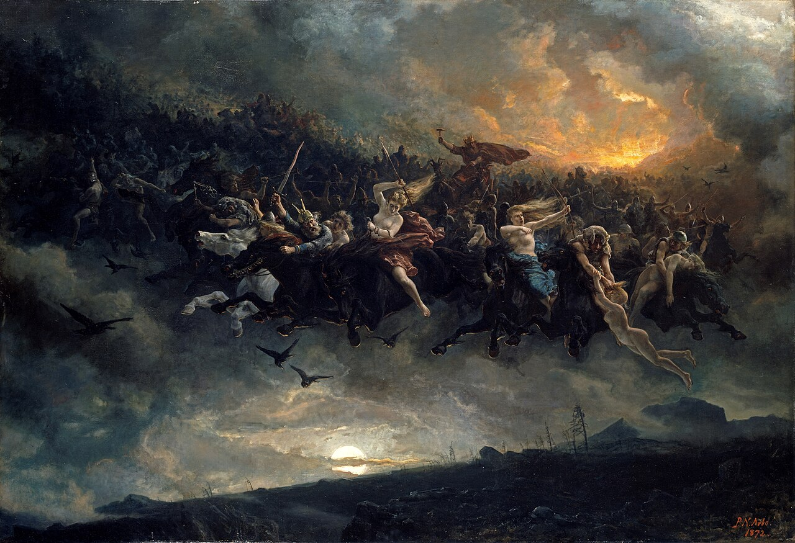

One grid, two directions.
Cells are the only module: the mark, the wordmark, the dissolve edge and the reticle are all built from them. No second texture.
A studio for slow software
One drawing, three voices, five colours, one loud field. The wordmark is cut from a cell grid — the same cells the picture dissolves into — so the identity never depends on a font, a build step, or a browser that happens to have the right face.

Huginn is one of Odin's two ravens: thought, sent out at dawn and back by supper. The system makes that return visible — a painting dissolving into a field, a name resolving out of the same cells. Everything else stays quiet so that moment can land.
Cells are the only module: the mark, the wordmark, the dissolve edge and the reticle are all built from them. No second texture.
Vermilion appears once — the footer, a cover, a stamp. Two loud fields on one page cancel each other out.
The brand owns a drawing, borrows a reading face, and labels in mono. Nothing here can break because a font did not load.
Ordered dither is the signature; the blackletter, the grain and the flourish are the same hand at different scales. They appear together on one surface, never scattered across a product.
A Bayer screen between the picture and the field, coarser than the letters so the two scales read as one hand. Two colours, no gradient.
Forty-one glyphs in a twenty-row cell grid, drawn with a simulated broad nib. A drawing, not a font: minimum 24 px, and never for body copy.
One noise layer over the sheet at 40–60% on the field, never over body copy. It is the difference between a poster and a screenshot.
One stroke that writes through the wordmark and knocks out a channel behind itself. Once per surface, on entrance only.
Two solid brackets, mirrored and almost meeting. The bridge is a vermilion keystone; the counters are the negative space. The primary is two brackets at 24 px and above; the compact is the same drawing at half scale with wider channels, and the favicon is the stamp.
Poster ink, night sky, bone sheet, the cobalt in the cloud, the pine
below the riders. Roles are measured in the browser, not assumed:
the numbers below come from scripts/contrast.mjs.
#EBE5D8Page ground, light#F4EFE5Raised ground, ink on dark#100F0EText, edges, dark ground#E2281BThe loud field. Display and fills#A31810Links, buttons, small type#1B2DB0Focus ring only, never decoration#5A5346Secondary text on the sheet#2C5B45Confirmation, never celebration| Pair | Light | Dark | Minimum | Status |
|---|---|---|---|---|
| Ink on sheet | 15.26:1 | 16.71:1 | 4.5 | Pass |
| Muted on sheet | 6.06:1 | 7.21:1 | 4.5 | Pass |
| Accent on sheet | 5.21:1 | 6.24:1 | 4.5 | Pass |
| Chalk on accent | 5.70:1 | 6.24:1 | 4.5 | Pass |
| Paper white on field | 4.56:1 | 4.61:1 | 4.5 | Pass |
| Chalk on field | 4.02:1 | 4.02:1 | 4.5 | Large only |
| Focus on sheet | 8.17:1 | 8.20:1 | 3.0 | Pass |
| Danger on sheet | 6.21:1 | 7.50:1 | 4.5 | Pass |
#FFFDF9) clears 4.5:1 and is the token the footer actually uses.
A drawing for the name, a serif for reading, a mono for labels. No sans anywhere — that is the stance, not an oversight. It keeps the system in the print world the painting came from, and it costs nothing to load.
Thought leaves at dawn, crosses the whole of the world, and is back by supper. The software should feel like that: quiet while it is away, certain when it returns.
Body copy sits at 17 px with a 62-character measure and unitless leading. Long passages keep the same size — no 14 px “small print” in the reading voice. If a paragraph needs to be smaller, it is not reading, it is a label, and labels are mono.
| Token | Size | Leading | Tracking | Use |
|---|---|---|---|---|
--text-display | clamp(2.75rem, 6.4vw, 5.25rem) | 0.94 | -0.035em | Hero, once per page |
--text-h2 | clamp(1.9rem, 3.6vw, 2.9rem) | 1.02 | -0.025em | Section title |
--text-h3 | 1.35rem | 1.16 | -0.012em | Card and panel titles |
--text-body | 1.0625rem | 1.58 | 0 | Reading |
--text-small | 0.9375rem | 1.5 | 0 | Captions in prose |
--text-label | 0.8125rem | 1.2 | 0.09em | Metadata, tracked |
--text-micro | 0.75rem | 1.15 | 0.1em | Dense labels only |
Corners are cut, not rounded: the only circle in the system is the reticle. Actions are mono and square, fields are serif, labels are always visible, and the error is linked to the field it belongs to.
One filled action per view. Secondary and ghost stay quiet; the ghost is a link that happens to be a button.
Label, hint, error. Try submitting an empty address — the summary takes focus and the field keeps its value.
Native inputs, styled by tokens. The switch is the only pill in the system, and it is a checkbox underneath.
An error says what happened and how to recover. Success confirms; it does not celebrate.
Feedback is fast and quiet; the one theatrical moment is a word resolving from eight-cell blocks down to one. It runs once, on entrance, and it ends in a still frame.
| Role | Token | Value | Use |
|---|---|---|---|
| Press | --dur-press | 120 ms | Buttons, fields, hover |
| Interface | --dur-ui | 240 ms | Popover, disclosure |
| Wipe | --dur-wipe | 520 ms | Captions, rules |
| Resolve | --dur-resolve | 800 ms | Wordmark, 8 → 1 |
| Scene | --dur-scene | 1100 ms | The footer, once |
prefers-reduced-motion: reduce every sequence jumps to its finished state. No information is carried by movement alone: the resolved wordmark, the revealed captions and the final dither frame are all valid stills.
The studio writes the way it ships: short sentences, concrete nouns, no adjectives doing the work of a decision. An error names the recovery. An empty state offers one action.
| Say | Not | Why |
|---|---|---|
| Save changes | Submit | The action names the result. |
| Enter an address we can reply to. | Invalid input. | The error names the recovery. |
| No projects yet. Start one. | Nothing here. | Empty states point forward. |
| We reply within two working days. | We'll get back to you soon! | A promise with a number is a promise. |
| Thought leaves at dawn. | Unleash your creative potential. | The metaphor is in the name; the copy does not need to sell it. |
Primitive → semantic → component. Components read roles, never
hexes. scripts/build-tokens.mjs writes both the CSS and
the JSON from one object; neither file is edited by hand.
primitives · 16→semantic · 16→components · 9
/* semantic layer — the only layer a component may read */
:root {
--surface: var(--hug-bone-200); /* page ground */
--surface-raised: var(--hug-bone-100); /* cards, inputs */
--surface-sunken: var(--hug-bone-300); /* wells, code */
--ink: var(--hug-ink-900); /* text, edges */
--ink-muted: #5A5346; /* 6.06:1 on sheet */
--ink-on-field: var(--hug-bone-000); /* under 18px on field */
--line: rgb(16 15 14 / 0.18); /* hairlines */
--accent: var(--hug-vermilion-700); /* links, buttons */
--accent-field: var(--hug-vermilion-500); /* the loud field */
--accent-ink: var(--hug-bone-100); /* ink on accent */
--focus: var(--hug-cobalt-500); /* focus ring only */
--danger: var(--hug-vermilion-700);
--ok: var(--hug-moss-700);
--radius: 0px; /* corners are cut */
--radius-pill: 999px; /* the switch */
--dur-press: 120ms;
--dur-resolve: 800ms;
--ease-sheet: cubic-bezier(.65, 0, .2, 1);
}The block above is the semantic layer, abbreviated. The two files are the complete, generated source.
Every claim points at a file or a browser check. Where a check did not happen, it says so — a specimen that hides its gaps is a brochure.
| Check | Evidence | Status |
|---|---|---|
| Mark reads at 16 / 32 / 64 px | brand/mark.svg, mark-compact.svg | Pass |
| Wordmark is outlined, not text | brand/wordmark.svg — 95 columns, 760 cells, one path | Pass |
| Contrast, measured on the rendered page | scripts/audit-contrast.mjs — 43 elements × 2 themes, 0 fail | Pass |
| Keyboard and focus order | scripts/audit-motion.mjs — 53 focusables, all ringed, skip link first | Pass |
| 1440 and 390, no overflow | docs/shots/ — scrollWidth equals clientWidth at both | Pass |
| Reduced motion ends in a still | scripts/audit-motion.mjs — nothing loops; frames identical 500 ms apart | Pass |
| Type on the field | Paper white 4.54:1. Hierarchy by size, never opacity — dimming spends the only headroom there is | Pass |
| Small vermilion type | Section numerals moved from field to accent: 3.67:1 → 6.21:1 | Pass |
| Painting is decorative by construction | Canvas is a mask, punched with transparent holes; no pixel is ever read | Pass |
| Safari and Firefox rendering | Not run in this environment | Not verified |
| Print sheet | Rules exist; no proof printed | Not verified |
Known gap: the reading face is the host's serif (Iowan Old Style on macOS, Georgia elsewhere). That is deliberate — the system ships no webfont — but it means line breaks are not identical across platforms. If a campaign needs fixed breaks, set them in the artwork, not in the text.
Two findings the first build got wrong, kept here because they are the useful part. The section numerals used the field vermilion for 12 px type — the token layer already said small type takes the accent role; the specimen was breaking its own rule. And the Wild Hunt footer dimmed its captions with opacity, which on a field that offers 4.54:1 of headroom is not a hierarchy, it is a subtraction.
The Wild Hunt footer: Arbo's painting dissolving into the field, the wordmark resolving out of the same cells, the flourish writing through it. Every colour and duration below comes from the tokens.